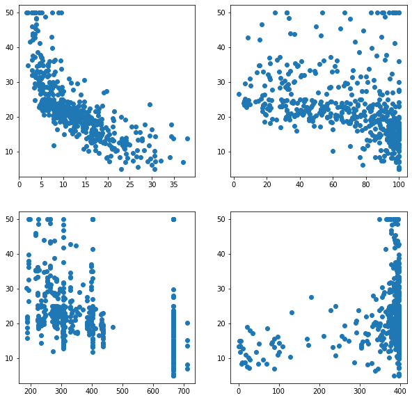
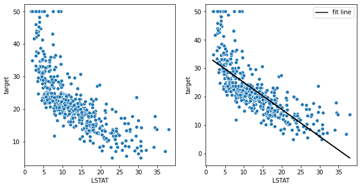
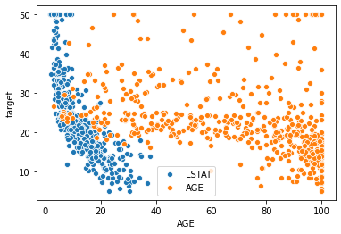
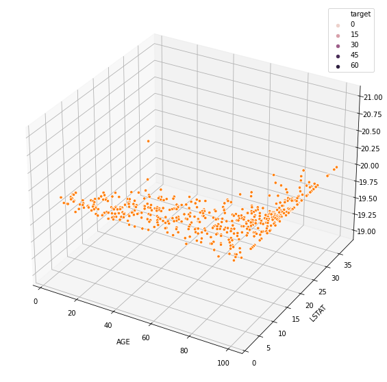
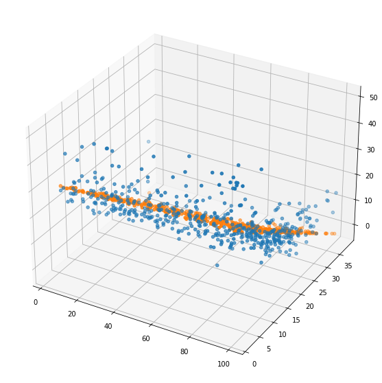
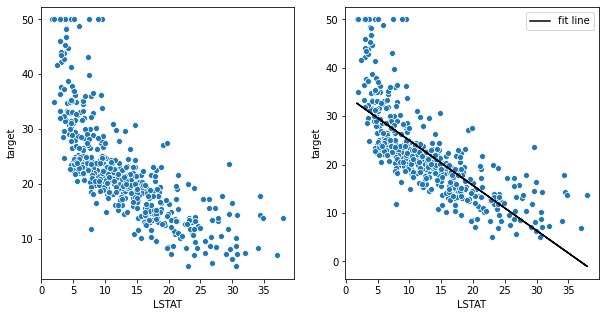

Linear Regression¶
[1]:
import pandas as pd
import numpy as np
from sklearn.datasets import load_boston
[2]:
dataset = load_boston()
[3]:
df = pd.DataFrame(data=dataset['data'],columns=dataset.feature_names)
df['target'] = dataset["target"]
df.head()
[3]:
| CRIM | ZN | INDUS | CHAS | NOX | RM | AGE | DIS | RAD | TAX | PTRATIO | B | LSTAT | target | |
|---|---|---|---|---|---|---|---|---|---|---|---|---|---|---|
| 0 | 0.00632 | 18.0 | 2.31 | 0.0 | 0.538 | 6.575 | 65.2 | 4.0900 | 1.0 | 296.0 | 15.3 | 396.90 | 4.98 | 24.0 |
| 1 | 0.02731 | 0.0 | 7.07 | 0.0 | 0.469 | 6.421 | 78.9 | 4.9671 | 2.0 | 242.0 | 17.8 | 396.90 | 9.14 | 21.6 |
| 2 | 0.02729 | 0.0 | 7.07 | 0.0 | 0.469 | 7.185 | 61.1 | 4.9671 | 2.0 | 242.0 | 17.8 | 392.83 | 4.03 | 34.7 |
| 3 | 0.03237 | 0.0 | 2.18 | 0.0 | 0.458 | 6.998 | 45.8 | 6.0622 | 3.0 | 222.0 | 18.7 | 394.63 | 2.94 | 33.4 |
| 4 | 0.06905 | 0.0 | 2.18 | 0.0 | 0.458 | 7.147 | 54.2 | 6.0622 | 3.0 | 222.0 | 18.7 | 396.90 | 5.33 | 36.2 |
[22]:
import matplotlib.pyplot as plt
import seaborn as sns
from sklearn.linear_model import LinearRegression
%matplotlib inline
Just taking randomly one feature to explore linear regression
[23]:
sns.scatterplot(df["LSTAT"],df["target"])
plt.show()

Building linear regression model¶
[24]:
linear_reg_init = LinearRegression(normalize=True)
print(linear_reg_init.__doc__)
Ordinary least squares Linear Regression.
LinearRegression fits a linear model with coefficients w = (w1, ..., wp)
to minimize the residual sum of squares between the observed targets in
the dataset, and the targets predicted by the linear approximation.
Parameters
----------
fit_intercept : bool, default=True
Whether to calculate the intercept for this model. If set
to False, no intercept will be used in calculations
(i.e. data is expected to be centered).
normalize : bool, default=False
This parameter is ignored when ``fit_intercept`` is set to False.
If True, the regressors X will be normalized before regression by
subtracting the mean and dividing by the l2-norm.
If you wish to standardize, please use
:class:`sklearn.preprocessing.StandardScaler` before calling ``fit`` on
an estimator with ``normalize=False``.
copy_X : bool, default=True
If True, X will be copied; else, it may be overwritten.
n_jobs : int, default=None
The number of jobs to use for the computation. This will only provide
speedup for n_targets > 1 and sufficient large problems.
``None`` means 1 unless in a :obj:`joblib.parallel_backend` context.
``-1`` means using all processors. See :term:`Glossary <n_jobs>`
for more details.
Attributes
----------
coef_ : array of shape (n_features, ) or (n_targets, n_features)
Estimated coefficients for the linear regression problem.
If multiple targets are passed during the fit (y 2D), this
is a 2D array of shape (n_targets, n_features), while if only
one target is passed, this is a 1D array of length n_features.
rank_ : int
Rank of matrix `X`. Only available when `X` is dense.
singular_ : array of shape (min(X, y),)
Singular values of `X`. Only available when `X` is dense.
intercept_ : float or array of shape (n_targets,)
Independent term in the linear model. Set to 0.0 if
`fit_intercept = False`.
See Also
--------
sklearn.linear_model.Ridge : Ridge regression addresses some of the
problems of Ordinary Least Squares by imposing a penalty on the
size of the coefficients with l2 regularization.
sklearn.linear_model.Lasso : The Lasso is a linear model that estimates
sparse coefficients with l1 regularization.
sklearn.linear_model.ElasticNet : Elastic-Net is a linear regression
model trained with both l1 and l2 -norm regularization of the
coefficients.
Notes
-----
From the implementation point of view, this is just plain Ordinary
Least Squares (scipy.linalg.lstsq) wrapped as a predictor object.
Examples
--------
>>> import numpy as np
>>> from sklearn.linear_model import LinearRegression
>>> X = np.array([[1, 1], [1, 2], [2, 2], [2, 3]])
>>> # y = 1 * x_0 + 2 * x_1 + 3
>>> y = np.dot(X, np.array([1, 2])) + 3
>>> reg = LinearRegression().fit(X, y)
>>> reg.score(X, y)
1.0
>>> reg.coef_
array([1., 2.])
>>> reg.intercept_
3.0000...
>>> reg.predict(np.array([[3, 5]]))
array([16.])
[25]:
feature_matrix = df['LSTAT'].values.reshape(-1,1)
feature_matrix.shape
[25]:
(506, 1)
[26]:
target_matrix = df["target"].values.reshape(-1,1)
target_matrix.shape
[26]:
(506, 1)
[27]:
linear_reg_model = linear_reg_init.fit(feature_matrix,target_matrix)
Visualizing fit line¶
[28]:
fig,ax = plt.subplots(1,2,figsize=(10,5))
sns.scatterplot(df["LSTAT"],df["target"],ax=ax[0])
sns.scatterplot(df["LSTAT"],df["target"],ax=ax[1])
ax[1].plot(df["LSTAT"],linear_reg_model.predict(feature_matrix),c='black',label="fit line")
ax[1].legend()
plt.show()

Trying with two features¶
[29]:
sns.scatterplot(df["LSTAT"],df["target"],label="LSTAT")
sns.scatterplot(df["AGE"],df["target"],label="AGE")
plt.legend()
plt.show()

[30]:
fig = plt.figure(figsize=(10,10))
ax = fig.add_subplot(projection="3d")
sns.scatterplot(df["AGE"],df["LSTAT"],df["target"])
plt.show()
/home/nishant/.local/lib/python3.8/site-packages/mpl_toolkits/mplot3d/art3d.py:838: FutureWarning: elementwise comparison failed; returning scalar instead, but in the future will perform elementwise comparison
if zdir == 'x':
/home/nishant/.local/lib/python3.8/site-packages/mpl_toolkits/mplot3d/art3d.py:840: FutureWarning: elementwise comparison failed; returning scalar instead, but in the future will perform elementwise comparison
elif zdir == 'y':
/home/nishant/.local/lib/python3.8/site-packages/mpl_toolkits/mplot3d/art3d.py:842: FutureWarning: elementwise comparison failed; returning scalar instead, but in the future will perform elementwise comparison
elif zdir[0] == '-':

[31]:
feature_matrix = df[['LSTAT','AGE']].values
feature_matrix.shape
[31]:
(506, 2)
[32]:
df["target"].values.shape
[32]:
(506,)
[33]:
linear_reg_model = LinearRegression().fit(df[['LSTAT','AGE']],target_matrix)
[55]:
fig = plt.figure(figsize=(10,10))
ax = fig.add_subplot(projection="3d")
ax.scatter(df["AGE"],df["LSTAT"],df["target"],marker="o")
ax.scatter(df["AGE"],df["LSTAT"],linear_reg_model.predict(df[['LSTAT','AGE']]))
plt.show()

Ridge(L2 Regularization) and Lasso(L1 Regularization) Regression¶
[56]:
from sklearn.linear_model import Ridge,Lasso
[64]:
print(Lasso.__doc__)
Linear Model trained with L1 prior as regularizer (aka the Lasso)
The optimization objective for Lasso is::
(1 / (2 * n_samples)) * ||y - Xw||^2_2 + alpha * ||w||_1
Technically the Lasso model is optimizing the same objective function as
the Elastic Net with ``l1_ratio=1.0`` (no L2 penalty).
Read more in the :ref:`User Guide <lasso>`.
Parameters
----------
alpha : float, default=1.0
Constant that multiplies the L1 term. Defaults to 1.0.
``alpha = 0`` is equivalent to an ordinary least square, solved
by the :class:`LinearRegression` object. For numerical
reasons, using ``alpha = 0`` with the ``Lasso`` object is not advised.
Given this, you should use the :class:`LinearRegression` object.
fit_intercept : bool, default=True
Whether to calculate the intercept for this model. If set
to False, no intercept will be used in calculations
(i.e. data is expected to be centered).
normalize : bool, default=False
This parameter is ignored when ``fit_intercept`` is set to False.
If True, the regressors X will be normalized before regression by
subtracting the mean and dividing by the l2-norm.
If you wish to standardize, please use
:class:`sklearn.preprocessing.StandardScaler` before calling ``fit``
on an estimator with ``normalize=False``.
precompute : 'auto', bool or array-like of shape (n_features, n_features), default=False
Whether to use a precomputed Gram matrix to speed up
calculations. If set to ``'auto'`` let us decide. The Gram
matrix can also be passed as argument. For sparse input
this option is always ``True`` to preserve sparsity.
copy_X : bool, default=True
If ``True``, X will be copied; else, it may be overwritten.
max_iter : int, default=1000
The maximum number of iterations
tol : float, default=1e-4
The tolerance for the optimization: if the updates are
smaller than ``tol``, the optimization code checks the
dual gap for optimality and continues until it is smaller
than ``tol``.
warm_start : bool, default=False
When set to True, reuse the solution of the previous call to fit as
initialization, otherwise, just erase the previous solution.
See :term:`the Glossary <warm_start>`.
positive : bool, default=False
When set to ``True``, forces the coefficients to be positive.
random_state : int, RandomState instance, default=None
The seed of the pseudo random number generator that selects a random
feature to update. Used when ``selection`` == 'random'.
Pass an int for reproducible output across multiple function calls.
See :term:`Glossary <random_state>`.
selection : {'cyclic', 'random'}, default='cyclic'
If set to 'random', a random coefficient is updated every iteration
rather than looping over features sequentially by default. This
(setting to 'random') often leads to significantly faster convergence
especially when tol is higher than 1e-4.
Attributes
----------
coef_ : ndarray of shape (n_features,) or (n_targets, n_features)
parameter vector (w in the cost function formula)
sparse_coef_ : sparse matrix of shape (n_features, 1) or (n_targets, n_features)
``sparse_coef_`` is a readonly property derived from ``coef_``
intercept_ : float or ndarray of shape (n_targets,)
independent term in decision function.
n_iter_ : int or list of int
number of iterations run by the coordinate descent solver to reach
the specified tolerance.
Examples
--------
>>> from sklearn import linear_model
>>> clf = linear_model.Lasso(alpha=0.1)
>>> clf.fit([[0,0], [1, 1], [2, 2]], [0, 1, 2])
Lasso(alpha=0.1)
>>> print(clf.coef_)
[0.85 0. ]
>>> print(clf.intercept_)
0.15...
See also
--------
lars_path
lasso_path
LassoLars
LassoCV
LassoLarsCV
sklearn.decomposition.sparse_encode
Notes
-----
The algorithm used to fit the model is coordinate descent.
To avoid unnecessary memory duplication the X argument of the fit method
should be directly passed as a Fortran-contiguous numpy array.
[61]:
feature_matrix = df['LSTAT'].values.reshape(-1,1)
target_matrix = df["target"].values.reshape(-1,1)
ridge_reg_model = Ridge(alpha=1.0).fit(feature_matrix,target_matrix)
fig,ax = plt.subplots(1,2,figsize=(10,5))
sns.scatterplot(df["LSTAT"],df["target"],ax=ax[0])
sns.scatterplot(df["LSTAT"],df["target"],ax=ax[1])
ax[1].plot(df["LSTAT"],ridge_reg_model.predict(feature_matrix),c='black',label="fit line")
ax[1].legend()
plt.show()
[65]:
print(Ridge.__doc__)
Linear least squares with l2 regularization.
Minimizes the objective function::
||y - Xw||^2_2 + alpha * ||w||^2_2
This model solves a regression model where the loss function is
the linear least squares function and regularization is given by
the l2-norm. Also known as Ridge Regression or Tikhonov regularization.
This estimator has built-in support for multi-variate regression
(i.e., when y is a 2d-array of shape (n_samples, n_targets)).
Read more in the :ref:`User Guide <ridge_regression>`.
Parameters
----------
alpha : {float, ndarray of shape (n_targets,)}, default=1.0
Regularization strength; must be a positive float. Regularization
improves the conditioning of the problem and reduces the variance of
the estimates. Larger values specify stronger regularization.
Alpha corresponds to ``1 / (2C)`` in other linear models such as
:class:`~sklearn.linear_model.LogisticRegression` or
:class:`sklearn.svm.LinearSVC`. If an array is passed, penalties are
assumed to be specific to the targets. Hence they must correspond in
number.
fit_intercept : bool, default=True
Whether to fit the intercept for this model. If set
to false, no intercept will be used in calculations
(i.e. ``X`` and ``y`` are expected to be centered).
normalize : bool, default=False
This parameter is ignored when ``fit_intercept`` is set to False.
If True, the regressors X will be normalized before regression by
subtracting the mean and dividing by the l2-norm.
If you wish to standardize, please use
:class:`sklearn.preprocessing.StandardScaler` before calling ``fit``
on an estimator with ``normalize=False``.
copy_X : bool, default=True
If True, X will be copied; else, it may be overwritten.
max_iter : int, default=None
Maximum number of iterations for conjugate gradient solver.
For 'sparse_cg' and 'lsqr' solvers, the default value is determined
by scipy.sparse.linalg. For 'sag' solver, the default value is 1000.
tol : float, default=1e-3
Precision of the solution.
solver : {'auto', 'svd', 'cholesky', 'lsqr', 'sparse_cg', 'sag', 'saga'}, default='auto'
Solver to use in the computational routines:
- 'auto' chooses the solver automatically based on the type of data.
- 'svd' uses a Singular Value Decomposition of X to compute the Ridge
coefficients. More stable for singular matrices than 'cholesky'.
- 'cholesky' uses the standard scipy.linalg.solve function to
obtain a closed-form solution.
- 'sparse_cg' uses the conjugate gradient solver as found in
scipy.sparse.linalg.cg. As an iterative algorithm, this solver is
more appropriate than 'cholesky' for large-scale data
(possibility to set `tol` and `max_iter`).
- 'lsqr' uses the dedicated regularized least-squares routine
scipy.sparse.linalg.lsqr. It is the fastest and uses an iterative
procedure.
- 'sag' uses a Stochastic Average Gradient descent, and 'saga' uses
its improved, unbiased version named SAGA. Both methods also use an
iterative procedure, and are often faster than other solvers when
both n_samples and n_features are large. Note that 'sag' and
'saga' fast convergence is only guaranteed on features with
approximately the same scale. You can preprocess the data with a
scaler from sklearn.preprocessing.
All last five solvers support both dense and sparse data. However, only
'sag' and 'sparse_cg' supports sparse input when `fit_intercept` is
True.
.. versionadded:: 0.17
Stochastic Average Gradient descent solver.
.. versionadded:: 0.19
SAGA solver.
random_state : int, RandomState instance, default=None
Used when ``solver`` == 'sag' or 'saga' to shuffle the data.
See :term:`Glossary <random_state>` for details.
.. versionadded:: 0.17
`random_state` to support Stochastic Average Gradient.
Attributes
----------
coef_ : ndarray of shape (n_features,) or (n_targets, n_features)
Weight vector(s).
intercept_ : float or ndarray of shape (n_targets,)
Independent term in decision function. Set to 0.0 if
``fit_intercept = False``.
n_iter_ : None or ndarray of shape (n_targets,)
Actual number of iterations for each target. Available only for
sag and lsqr solvers. Other solvers will return None.
.. versionadded:: 0.17
See also
--------
RidgeClassifier : Ridge classifier
RidgeCV : Ridge regression with built-in cross validation
:class:`sklearn.kernel_ridge.KernelRidge` : Kernel ridge regression
combines ridge regression with the kernel trick
Examples
--------
>>> from sklearn.linear_model import Ridge
>>> import numpy as np
>>> n_samples, n_features = 10, 5
>>> rng = np.random.RandomState(0)
>>> y = rng.randn(n_samples)
>>> X = rng.randn(n_samples, n_features)
>>> clf = Ridge(alpha=1.0)
>>> clf.fit(X, y)
Ridge()
[62]:
feature_matrix = df['LSTAT'].values.reshape(-1,1)
target_matrix = df["target"].values.reshape(-1,1)
lasso_reg_model = Lasso(alpha=1.0).fit(feature_matrix,target_matrix)
fig,ax = plt.subplots(1,2,figsize=(10,5))
sns.scatterplot(df["LSTAT"],df["target"],ax=ax[0])
sns.scatterplot(df["LSTAT"],df["target"],ax=ax[1])
ax[1].plot(df["LSTAT"],lasso_reg_model.predict(feature_matrix),c='black',label="fit line")
ax[1].legend()
plt.show()

[ ]: